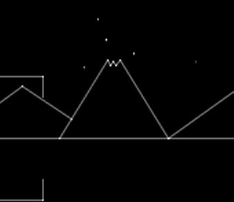

Battlezone- 1980 Atari Inc.
Erupting volcano
I shared a lab at Atari with Ed
Rotberg, who was working on Battlezone in 1980. I kept pestering him
about the volcano in the backdrop, asking him when he was going to add
code to make it erupt. Ed's response was, "I'm trying to make a game here!
I don't have time for that" or something along those lines. But I kept
at him. Finally, he told me, "Look. If you want the volcano to erupt, write
the damn code yourself!" So I did :)

| |
|